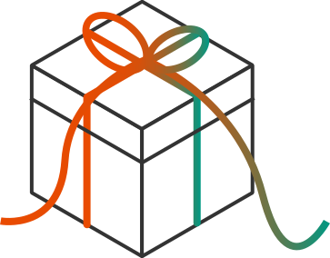
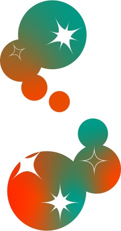

About me...

東京造形大学
造形学部デザイン学科メディアデザイン専攻領域
宇佐美和秀
このポートフォリオのテーマは、
「 贈り物 」と「 星の光 」。
大好きでどこか縁深く感じるモチーフと、信念を掛け合わせました。
そんな僕のモットーは、
-人にギフトをあげること-

My Policy
僕にとってギフトとは、”相手を認めること”。相手を認めるとは、価値観を否定せず、受け入れ、波長を合わせること。優しさと責任感を持って関わることで、プロジェクトは前進すると信じています。そして最後にチームのみんなと達成感や喜びを分かち合える瞬間が大好きです。

Design Policy
デザインは、人生を通じて続く「終わりのない学び」だと考えています。日々インプットを続け、「アイデアの連鎖」を大切に、思考の近道に頼らず、俯瞰して本質を見る。そんなデザイナーを目指しています。
-
- 2021.4
- 八王子学園八王子高等学校に入学 美術コースでデザインや美術を学ぶ
-
- 2021.5
- コンピューター科学部に入部し、JavaScriptを学ぶ 初めてのWeb制作
-
- 2021.10
- 文化祭実行委員となる。クラスの企画を指揮
-
- 2023.4
- 東京造形大学に入学
-
- 2023.4
- 学生自治会に入る
-
- 2023.5
- 大学祭実行委員 花火企画の責任者となる
-
- 2024.4
- 大学祭実行委員 広報係長に就任 特設サイトを制作
-
- 2025.5
- オープンキャンパスユニットメンバーに
-
- 2025.6
- クラブ・サークル連合長に就任
-
- 2027.3
- 卒業見込み
My History
高校時代
大学時代